СХЕМА БЕРНУЛЛІ ДЛЯ ПОСЛІДОВНОСТІ НЕЗАЛЕЖНИК ВИПРОБУВАНЬ.
Групу дослідів, що проводяться в незмінних умовах будемо плішини послідовністю п випробувань. Послідовність п дослідів називають незалежними відносно події А, якщо імовірність події в одному експерименті не залежить від результатів інших експериментів. Обмежимося незалежними експериментами, тобто експериментами, в кожному із яких імовірність появи події А однакова.
Нехай проводиться послідовність п незалежних експериментів кожному із яких подія А з'являється з імовірністю Р і не з'являється з імовірністю g-1. Tоді імовірність того, що в результаті цих дослідів подія А наступить.
рівно К разів -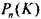обчислюється за формулою Бернуллі.
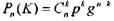
або ж 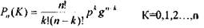
Імовірність гою, що подія з'явиться: а)менше к разів;
б) більше к разів;
в) не менше к разів;
г) не більше к разів;
знаходять відповідно за формулами:
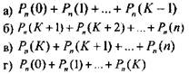
Умову задачі, що розв'язується за допомогою формули Бернуллі
називають схемою Бернуллі. Значення 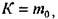при якому ймовірність
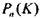 набуває найбільшого значення називається найбільш імовірним числом появи події А і визначається за формулою:
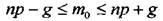
Якщо межі цієї нерівності не цілі числа, то найімовірнішим числом буде
ціле число, що знаходиться між межами.
Якщо межі нерівності - цілі числа, то найімовірніших чисел буде два і вони рівні цим межам.
ПРИКЛАД: Імовірність того, що комп'ютер не зіпсується після 500 годин роботи рівна 0.2 Яка імовірність того, що із 5 комп'ютерів не менше трьох залишиться не зіпсованими після 500 годин роботи.
РО'ІН'Я'ІОК: Роботу кожною комп'ютера на протязі 500 годин розглядаємо, як окремий експеримент Відповідно умові проводяться 5 таких дослідів. 11 ас пікапи 11, імовірність події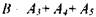
де 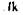 означає, що внаслідок 5 експериментів подія А ( комп'ютер не зіпсується) появиться рівно к разів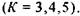 5а формулою Бернуллі:
І отже.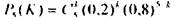
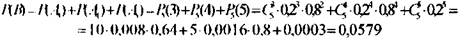